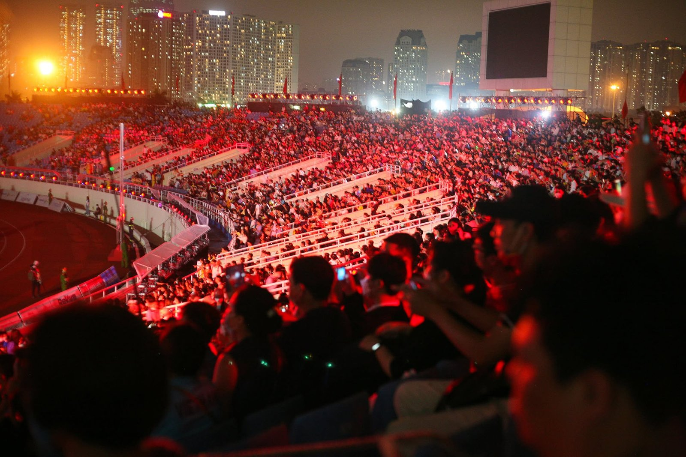
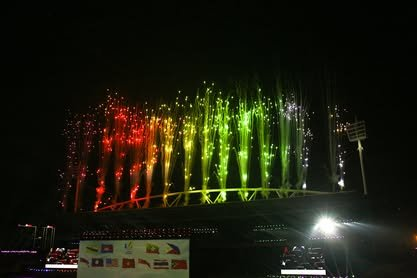

Những năm gần đây, mình có cơ hội tham gia công tác y tế tại khá nhiều concert, lễ hội âm nhạc và sự kiện ngoài trời đông người. Nếu hỏi ca bệnh nào gặp nhiều nhất, có lẽ vẫn là ngất do mệt, say nắng hoặc các chấn thương nhẹ.
Nhưng bên cạnh đó, cũng có những tình huống rất hi hữu. Những câu chuyện mà nếu chỉ nghe kể thôi, nhiều người sẽ nghĩ xác suất xảy ra là rất thấp. Thế nhưng khi làm y tế sự kiện đủ lâu, mình nhận ra rằng ở nơi tập trung hàng chục nghìn người, điều bất ngờ nào cũng có thể xảy ra.

Ngất xỉu vì quá sung và quá đói
Đây là tình huống phổ biến nhất nhưng mỗi lần gặp vẫn khiến mình thấy vừa thương vừa buồn cười.
Nhiều bạn trẻ đến từ rất sớm, có khi từ 6-7 giờ sáng để xếp hàng giữ vị trí đẹp. Vì sợ mất chỗ, nhiều bạn hạn chế ăn uống, thậm chí nhịn cả bữa trưa. Đến khi chương trình bắt đầu, mọi người lại hò hét, nhảy múa liên tục trong nhiều giờ.
Có những bạn được bạn bè dìu vào khu vực y tế trong tình trạng mặt tái nhợt, mồ hôi vã ra như tắm, huyết áp tụt và gần như không còn sức để đứng. Sau khi được nằm nghỉ, uống nước điện giải và theo dõi một thời gian, đa số đều hồi phục khá nhanh.
Điều thú vị là nhiều trường hợp vừa mở mắt ra đã hỏi ngay: "Anh ơi, ca sĩ em thích diễn chưa?"
Có bạn còn xin quay lại sân khấu ngay sau khi vừa tỉnh. Mình phải giải thích rất lâu mới chịu ngồi nghỉ thêm vài phút.
Người mệt nhất đôi khi lại là staff
Khán giả đến xem vài tiếng đồng hồ, nhưng đội ngũ staff có khi phải làm việc từ sáng sớm cho đến tận lúc thu dọn sân khấu vào đêm muộn.
Mình từng gặp một bạn nam phụ trách hậu cần. Suốt cả ngày hôm đó bạn liên tục vận chuyển hàng rào, hỗ trợ kỹ thuật rồi điều phối khán giả. Đến gần cuối chương trình thì đột nhiên ôm chân ngồi thụp xuống.
Khi tiếp cận, mình thấy cơ bắp chân co cứng hoàn toàn do chuột rút. Nguyên nhân chủ yếu là vận động quá nhiều, mất nước và không có thời gian nghỉ ngơi.
Sau khi được hỗ trợ kéo giãn cơ, xoa bóp và bổ sung nước điện giải, tình trạng cải thiện khá nhanh. Điều khiến mình ấn tượng là vừa đỡ đau, bạn ấy đã đứng dậy xin quay lại làm việc vì "còn nhiều việc quá anh ạ".
Phía sau một chương trình thành công thường có rất nhiều người âm thầm làm việc như vậy.
Sự cố pháo hoa khiến cả ekip thót tim
Một trong những tình huống hi hữu nhất mình từng gặp liên quan đến hệ thống pháo hoa sân khấu.
Trong lúc chương trình đang diễn ra, một thiết bị pháo hiệu bất ngờ hoạt động không đúng hướng thiết kế. Tia lửa bắn lệch khiến một số người ở gần giật mình bỏ chạy.
May mắn không có trường hợp bỏng nặng, chủ yếu là bỏng nhẹ hoặc xây xát do va chạm khi né tránh. Tuy nhiên chỉ trong vài giây, cả đội y tế, an ninh và kỹ thuật đều phải chuyển sang trạng thái sẵn sàng xử lý tình huống khẩn cấp.
Những sự cố như vậy hiếm gặp nhưng luôn là lý do khiến các chương trình lớn phải có phương án y tế và ứng cứu tại chỗ.

Chiếc flycam rơi từ trên đầu xuống
Nếu có ai hỏi tình huống nào khiến mình bất ngờ nhất, có lẽ đó là trường hợp flycam rơi vào đầu khán giả.
Hôm đó flycam đang ghi hình trên khu vực đám đông thì gặp sự cố. Chỉ vài giây sau, thiết bị rơi xuống và trúng một người bên dưới.
Khi được đưa vào khu vực y tế, bệnh nhân hoàn toàn tỉnh táo nhưng có vết sưng khá lớn ở vùng đầu kèm theo xây xát da đầu. Điều đầu tiên cần làm là đánh giá các dấu hiệu chấn thương sọ não như đau đầu nhiều, nôn, rối loạn ý thức hoặc mất trí nhớ tạm thời.
May mắn các dấu hiệu ban đầu đều ổn định. Sau khi sơ cứu và theo dõi, người bệnh được hướng dẫn tiếp tục đến cơ sở y tế để kiểm tra thêm.
Đó là lần hiếm hoi mình thấy cả những người đứng xung quanh cùng ngước lên trời với ánh mắt đầy lo lắng.
Cú ngã trong nhà vệ sinh và vết rách da đầu đầy máu
Không phải mọi ca cấp cứu đều xảy ra ở khu vực sân khấu.
Một lần khác, nhân viên an ninh gọi bộ đàm báo có người bị chấn thương trong nhà vệ sinh. Khi tới nơi, mình thấy một khán giả vừa bị ngã do nền nhà trơn ướt.
Người bệnh đập đầu vào cạnh bồn rửa và bị rách da đầu. Máu chảy khá nhiều khiến những người xung quanh hoảng sợ.
Thực tế, da đầu là vùng có rất nhiều mạch máu nên chỉ một vết thương nhỏ cũng có thể gây chảy máu đáng kể. Sau khi sơ cứu cầm máu, đánh giá ý thức và các dấu hiệu thần kinh, người bệnh được chuyển đến bệnh viện để khâu vết thương.
May mắn không ghi nhận tổn thương nghiêm trọng hơn.
Điều không ai nhớ nhưng luôn phải chuẩn bị
Khán giả đến sự kiện để tận hưởng âm nhạc, ánh sáng và những khoảnh khắc bùng nổ trên sân khấu. Còn với đội ngũ y tế, chúng mình luôn chuẩn bị cho những điều không ai mong muốn xảy ra.
Đó có thể là một người ngất vì đói, một staff chuột rút vì làm việc quá sức, một sự cố pháo hoa, một chiếc flycam rơi bất ngờ hay một cú trượt chân trong nhà vệ sinh.
May mắn là phần lớn các tình huống đều được xử lý an toàn. Nhưng sau mỗi sự kiện, điều khiến mình vui nhất không phải là đã xử trí được bao nhiêu ca bệnh, mà là khi khu vực cấp cứu dần trống đi và hàng chục nghìn người có thể trở về nhà bình an sau một ngày vui trọn vẹn.